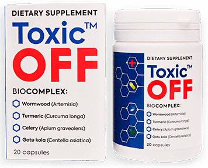

Detox - obecné čištění těla Jak vyhnat parazity, zhubnout a zlepšit vaši pohodu

Odpady, toxiny, pesticidy a paraziti pomalu zabíjejí populaci, to je šokující
prohlášení
Stockholmské zdravotní komory.
Podle ní každý ročně zkonzumuje 10–15 kg GMO, pesticidů, konzervačních látek, růstových hormonů a těžkých kovů. Spolu s těmito látkami vstupují do těla paraziti, což má ve většině případů nevratné následky: od oslabení imunity po rozvoj závažných onemocnění. Podle statistik WHO každoročně umírá na parazitární infekci přibližně 1 000 000 lidí.
Únava, deprese, poruchy spánku, bolesti hlavy, onemocnění kůže a kloubů jsou důsledkem intoxikace těla škodlivými látkami a parazity.
"Člověk může léta chodit k lékaři. Každý z lékařů bude léčit pacienta na nějakou nemoc, ale nikdy neodhalí skutečnou příčinu. Nejde o špatnou kvalifikaci, ale o skutečnost, že paraziti nejsou považováni za hlavní příčinu vývoje nemoci. Bohužel. Podle statistik neměli infikovaní pacienti v 91% případů ani podezření, že mají parazity.“ - říkají parazitologové.
„Téměř 75% světové populace jsou nositeli parazitárních onemocnění. V příštích 10 letech se počet úmrtí zdvojnásobí! “
Paraziti kolonizují tělo. Absorbují z něj všechny užitečné látky a stopové prvky a snižují jeho odolnost. Když se škůdci usazují v cévách, vytvářejí krevní sraženiny, které způsobují infarkty, mrtvice a další kardiovaskulární onemocnění. Kolonizací celých orgánových systémů paraziti a jejich odpadní produkty vyvolávají tvorbu infekcí a nádorů.


Podle Stockholmské zdravotní komory vyvolaly toxiny a destruktivní aktivita parazitů v těle vznik chronických onkologických onemocnění a AIDS u 64% pacientů.
Jak pomoci tělu?

Zpravodaj Stockholmské zdravotní komory -
Ivan Lunden,
parazitolog-imunolog
Fyzická slabost, ospalost, špatná nálada, apatie a deprese - moderní medicína již tyto příznaky nepovažuje za nevýznamné. Značí závažná onemocnění, včetně parazitických.
Pacienti za mnou často přicházejí s příznaky chronické únavy. Obvykle již obešli několik odborníků a dostali od nich pouze recepty na kúru vitamínových-energetických nápojů nebo imunostimulantů. Ale bez kvalitního detoxu jsou tyto věci k ničemu.
Mnoho lidí se mýlí ve víře, že detoxikace je nutná pouze při hubnutí. Špatné zdraví a slabá imunita jsou výsledkem života v moderní metropoli. Detoxikace eliminuje tyto a další příznaky očištěním těla od parazitů a jedovatých látek (strusky, toxiny, pesticidy, kovy).
Existuje několik metod detoxikace: pomocí procedur (výplach trávicího traktu a hydrokolonoterapie) a pomocí léků (aktivní uhlí, oxid křemičitý, lignin atd.). Tyto metody jsou však zastaralé a vyžadují odborné školení a dohled.
Věda nestojí na místě a parazitology vyvinutý to dokazuje. Je to domácí detoxikační přípravek. Je mnohonásobně účinnější než zastaralé metody a nevyžaduje návštěvu specializované kliniky.
Od prvních dnů užívání neutralizuje působení škodlivých látek, potlačuje vitální aktivitu parazitů a odstraňuje je z těla.
Součástí nejsou žádná antibiotika ani jiné agresivní látky. Produkt působí jemně, aniž by narušoval přirozené procesy, protože obsahuje přírodní extrakty a výtažky:

Indický angrešt Silný antioxidant. Odvádí toxiny. Čistí plíce, krev, lymfa, játra a ledviny. Eliminuje patogenní mikroorganismy a má imunomodulační účinek.

Extrakt z pelyňku Zastaví vitální aktivitu i těch nejaktivnějších parazitů. Paralyzuje je, potlačuje jejich schopnost reprodukce a vyvádí je spolu s jejich vajíčky z těla.

Gotu kola Stimuluje odtok žluči, který pomáhá očistit gastrointestinální trakt od stagnace, parazitů, jejich larev a vajíček. Zlepšuje trávení.

Kurkuma Má protizánětlivé a protinádorové účinky. Neutralizuje onkogenní flóru v těle. Potlačuje vitální aktivitu mikrobů a virů.

Celer Obnovuje tkáň poškozenou parazity. Obnovuje střevní mikroflóru a zvyšuje ochrannou funkci těla.
Výsledky laboratorního výzkumu
stockholmského parazitologického institutu
V roce 2019 byl zkoumán v nezávislé laboratoři Stockholmského parazitologického institutu. Účinnost přípravku byla zaznamenána u všech subjektů.

-
Kompletní očista těla od parazitů a toxinů
98% předmětů -
Normalizace práce orgánů všech systémů
97% předmětů -
Zlepšení fyzické vytrvalosti a výkonu
96% předmětů -
Snížení hmotnosti o 5-10 kg
89% předmětů -
Přechod na mírnou formu chronických onemocnění
81% předmětů
Navíc po kúře došlo u zkoumaných osob ke zlepšení spánkových vzorců, stavu pokožky (zmizely papilomy a psoriáza), zlepšení pohyblivosti kloubů, zastavení projevů sezónních a domácích alergií a zvýšení mozkové aktivity.
Z toho vyplývá, že detox nikomu neublíží a je velmi doporučován zejména těm, kteří často konzumují zeleninu, maso, sladkosti, kávu a alkohol.
si musíte bezpodmínečně doplnit do lékárničky, pokud přicházíte do kontaktu se zvířaty, půdou (zahrada); pokud aktivně používáte veřejnou dopravu nebo sdílené WC.
V této fázi probíhají jednání s farmaceutickými společnostmi o dodávkách prostředků do všech přepážek lékáren za pevnou cenu výrobce. Určitě upozorníme populaci na všechny nuance, ale zatím výrobce prodává na oficiálních webových stránkách a omezuje tak marže ve farmacii a maloobchodu.
Podle statistik existují skeptici, kteří si myslí, že je to všechno mine. V takovém případě vám navrhuji odpovědět si na několik otázek:
Pokud jste alespoň na dvě otázky odpověděli ano, je to znepokojivé. Doporučuji začít brát .
Komentáře: (22)
Už seskoro bojím jít do obchodu - všechny výrobky obsahují konzervační látky a emulgátory, GMO a další hnusy.
(22) OdpovědětNikdy jsem o takové čistící metodě neslyšela, díky za tip. Kúru si určitě musím koupit a pokusit se absolvovat, rozhodně to nebude zbytečné.
(19) OdpovědětTeprve nedávno jsem si o přečetla na jednom fóru a objednala jsem si. Těším se a doufám, že to pomůže. Máme doma 2 psy, můj manžel je s nimi skoro pořád. Tak jsem si všimla. že za poslední měsíc hodně zhubl a pravidelně si stěžuje na všechny příznaky, které jsou popsány v článku. Jsem si jistá, že můj manžel má parazity.
(8) OdpovědětKdyž už se tu svěřujeme, i v naší rodině byl stejný problém. Ale věděla jsem o už dlouho, užívala ho kdysi moje sestra. Začali jsme to hned brát a rychle se uzdravili. Naprosto souhlasím s autorem, je nutné provést prevenci.
(13) OdpovědětPo kontaktu se zvířaty je základní umýt si ruce!
(20) OdpovědětAsi jste se s parazity nikdy nesetkala, takže uvažujete takto. Celé léto jsem trávila na zahradě. I když jsem nezapomínala na veškerá opatření, nosila rukavice a všechno možné, chytila jsem tuto infekci.
(5) OdpovědětJsem tak podezřívavá! Už jsem si našla všechny příznaky. Objednám si to hned jako prostředek pro prevenci.
(2) OdpovědětAno, nyní mnoho lékařů doporučuje podstoupit detoxikaci, říkají, že je to pro tělo velmi dobré. Dříve jsem tomu nerozuměla, ale teď ano. Ty GMO a další věci nás opravdu zabíjejí. Teď si objednám a provedu si detox doma.
(17) OdpovědětDříve jsem kvůli detoxikaci chodila každý rok na speciální kliniku nebo do sanatoria, kde mi můj trávicí trakt úplně vyčistili. Účinek po detoxu je super. Zdravotní stav je vynikající. A celý rok jsem pak nebyla nemocná.
(21) OdpovědětÚžasný produkt, moje matka mě s ním seznámila. Má ráda detoxikační produkty, pořád dží nějaké speciální diety. Po kúře dokonce vypadala mladší. Také jsem se rozhodla detoxikovat. Objednala jsem si balíček. Omlouvám se za podrobnosti, ale byla jsem zaskočena, když jsem viděla, co ze mě vychází.
Noční můra! Absolvovala jsem celou kúru. Nyní si nestěžuji na nic, i když jsem dřív měla migrény. Také jsem si všimla, že se mi lépe pracuje (jsem účetní), asi mi mozek začal fungovat lépe. Doporučuji všem.
(19) OdpovědětNechápu, proč to sem vůbec psát?
(1) OdpovědětTo, co je přirozené, není hnusné!
-8 OdpovědětAhoj. Hledala jsem něco na parazity a našla jsem tento článek. Teď objednávám. Celá rodina jsme šlina testy a našli nám parazity. Ani nevím, odkud se vzali, kupujeme jen přírodní produkty na trhu.
(10) OdpovědětNyní nevíte, kde je to lepší. Trh je živnou půdou pro mikroby, nejsou dány žádné podmínky skladování potravin (masa a ryb). Supermarket je zase plný chemikálií.
(15) Odpovědět100%
(6) OdpovědětDobrý den, děkuji za informace. Trpěli jsme 2 týdny, snažili jsme se parazitů zbavit lidovými metodami. To je všechno nesmysl! Jakmile jsme začali užívat toto antiparazitikum, okamžitě jsme se cítili lépe. Nadýmání a zvracení druhý den zmizely. Po týdnu testy ukázaly úplné zotavení.
(3) OdpovědětSprávně napište - parazity se můžete nakazit ve veřejné dopravě, v kanceláři, na poště a jídlem. Manžel například miluje tatarák, takže máme antiparazitické přípravky doma pořád. Radši si objednám i a dám ho do domácí lékárničky.
(17) OdpovědětKolik druhů parazitů existuje, ještě nebylo prostudováno, ale lidé jejich přítomností trpí, to je víc než jasné. Slyšel jsem, že existuje 19 druhů parazitů, které mohou člověka dokonce zabít. Musíme je zabíjet různými léky a antibiotiky.
(1) OdpovědětAntibiotika nepomohou zbavit se parazitů; jedná se o širokospektrální lék. V tomto případě potřebujete něco, co lokálně zasáhne v zóně působení parazitů a potlačí jejich vitální aktivitu. Třeba . Antiparazitika zabijí škůdce a ti přirozeně opouštějí tělo.
(11) OdpovědětDěkuji, už chápu princip antibiotik. Doktor mi řekl, že antibiotika nemají žádný účinek na parazity, pouze zabíjejí střevní mikroflóru a naopak pomáhají parazitům se tam množit.
(9) OdpovědětProč se trávit chemií a antibiotiky, pokud si můžete vybrat přípravky s přírodním složením. Nerozumím takové hlouposti...
(5) OdpovědětTady je moje objednávka. Zahajuji silný detox!
(12) Odpovědět